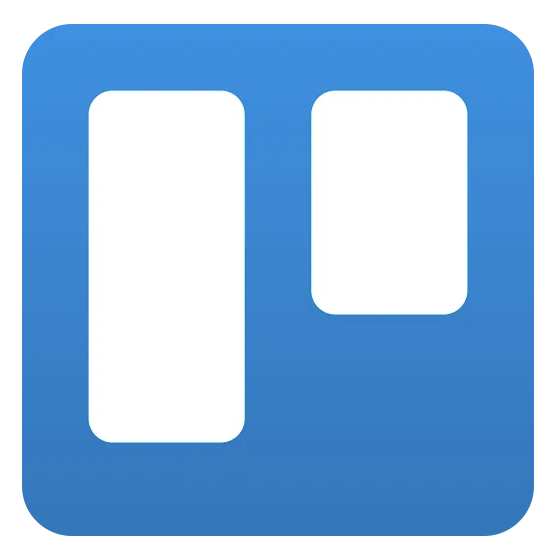
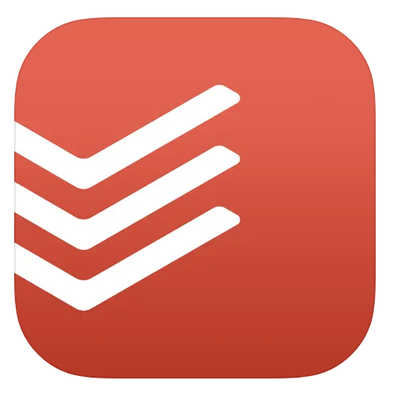

はじめに
忙しいビジネスシーンでは、ちょっとした確認不足やコミュニケーションの行き違いからミスが起こりやすいものです。 特にADHDや発達障害の特性を持つ方にとっては、業務上のうっかりが大きな負担やストレスにつながることも。 このページでは、ミスを未然に防ぐためのタスク管理やコミュニケーションのコツ、役立つツールなどを詳しくご紹介します。
タスク管理のコツ
仕事のミスを防ぐ第一歩は「自分のタスクを正確に把握する」こと。以下のステップを参考にしてみてください。
- タスクを細分化: 大きなプロジェクトでも、やるべき作業を小さく分けることで抜け漏れを防ぎやすくなります。
- 優先度を決める: 緊急性と重要度を軸にタスクを並べ替え、優先度の高いものから着手しましょう。
- 進捗を可視化: ホワイトボードやタスク管理アプリで「今どこまで進んでいるか」を常に確認できるようにすると安心です。
会議やプロジェクト管理の注意点
チームで進めるプロジェクトや定例会議では、以下のポイントを押さえるとミスが減ります。
- アジェンダ（議題）の共有: 会議の前に目的や議題を明確にし、参加者全員に共有する。
- 議事録の作成: 会議の内容や決定事項を記録し、後から振り返りやすくする。
- 定期的な振り返り: 週1回など短いスパンで進捗を確認し、問題点を早期発見する。
- 責任分担の明確化: 誰が何をいつまでに行うかをはっきりさせる。
おすすめツールとアプリ
タスクやプロジェクト管理を効率化するために、以下のツールやアプリが実務でよく利用されています。PC向けだけでなく、iOSデバイスでも使えるアプリもご紹介します。
-  Trello: 付箋のような感覚でタスクを「ToDo」「進行中」「完了」などのカラムに仕分けでき、視覚的に管理可能。
-  Todoist: ToDo リストとタスク管理: シンプルな操作と豊富な機能で、個人からチームまで幅広く利用できるタスク管理ツールです。
-
 Google カレンダー:
予定を可視化し、リマインダー機能と組み合わせることで重要な締切を忘れにくくします。
Google カレンダー:
予定を可視化し、リマインダー機能と組み合わせることで重要な締切を忘れにくくします。
コミュニケーションのポイント
業務上のミスの多くは「言った・言わない」「伝わっていなかった」というコミュニケーションギャップが原因です。以下の点に注意してみましょう。
- 要点を簡潔にまとめる: メールやチャットで伝える際は、重要な情報を箇条書きにすると相手に伝わりやすい。
- 受け手の理解を確認する: 「○○の件、問題ないでしょうか？」と相手からの返信や確認を得ることで認識のズレを減らす。
- マニュアルやテンプレートの活用: 定型業務がある場合は手順を明文化し、誰が見ても同じ作業ができるようにする。
追加のヒント
- 大事なタスクは複数の場所（ToDoリスト・カレンダーなど）で管理し、リマインダーを重ねる。
- 小さな疑問でも放置せず、すぐに上司や同僚に確認する習慣をつける。
- 定期的に「うっかりミス」の原因を振り返り、仕組みやルールを改善する。